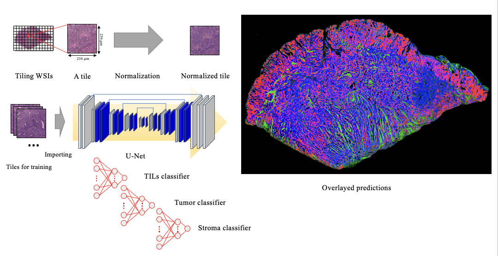

Research
Interactive Machine Learning Software
HistomicsML2 is a software platform for fast and interactive development of deep learning classifiers from whole-slide imaging datasets. Scientists can use the browser-based interface of HistomicsML2 to train and validate classifiers for patterns like tumor infiltrating lymphocytes to support tissue-based studies. An approach called active learning guides users to label the most valuable training instances, producing more accurate classifiers with less time and effort. Source code: https://github.com/CancerDataScience/HistomicsML2 Documentation: https://histomicsml2.readthedocs.io/en/latest/index.html
Spatial Image Analysis
 Spatial image analysis is a field of study focusing on analyzing images with their spatial characteristics or relationship. As cancer-related research requires laborious and time-consuming tasks on complex microscopy experiments to detect different types of cells with interesting features, there has been a central challenge in analyzing, exploring, and interpreting tumor microenvironmental conditions through the automated intelligent method. To overcome the challenge of investigating the interactions between cancer cells in the Tumor Microenvironment (TME), our lab aims to develop a new spatial image analysis method exploring the interactions between cancer cells in the TME.